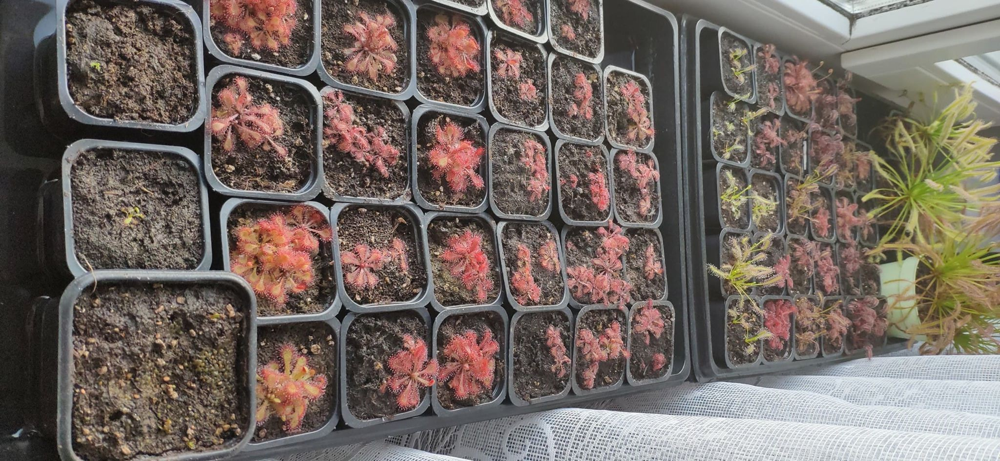

 Tutaj nie potrzebne podzialy na poszczegolne rodziny. Wszystkie owadożery potrzebują jako podloże kwaśnego torfu (pH 3-5-4,5). Dobrze jest zadbać o odpowiednią przepuszczalność podloża, gdyż rośline te muszą mieć stale mokre podłoże. Najlepiej zastosować gotowe mieszanki torfu z perlitem itp. Natomiast jeśli chcemy sami przygotować podloze, z pomocą może przyjść nam zwykly piasek. Mieszanka 1/3 piasek torf z pewnością zapewni odpowiednią przepuszczalność. Dodatkowo należy pamiętać aby torf był luźny - nie można ubijać.